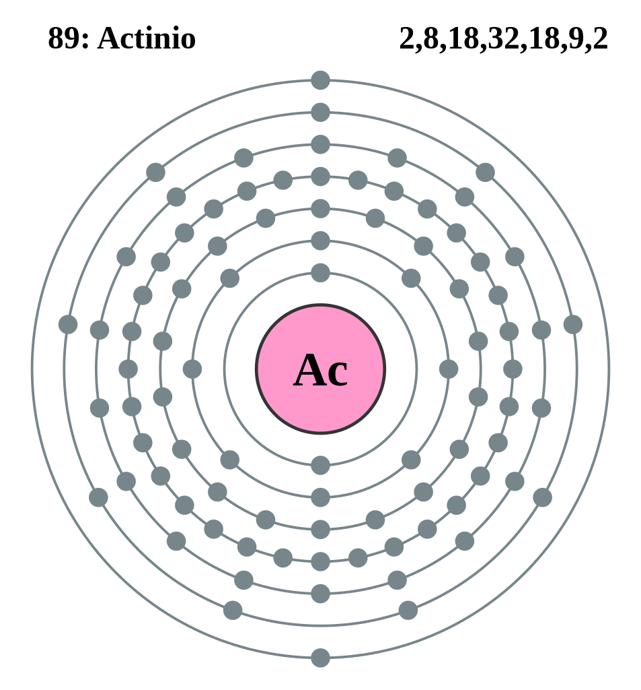

|
|
||
|
ACTINIO El actinio es un elemento metálico radiactivo plateado. El actinio brilla en la oscuridad debido a su intensa radiactividad con una luz azul. El actinio fue descubierto en 1899 por André-Louis Debierne, un químico francés, quien lo separó de la pechblenda. Friedrich Otto Giesel descubrió de forma independiente el actinio en 1902. El comportamiento químico del actinio es similar al del lantano de tierras raras . Es unas 150 veces más radiactivo que el radio, lo que lo hace valioso como fuente de neutrones. Por lo demás, no tiene aplicaciones industriales significativas. El actinio-227 es extremadamente radiactivo y, en términos de su potencial de efectos sobre la salud inducidos por la radiación, el actinio-227 es casi tan peligroso como el plutonio. Ingerir incluso pequeñas cantidades de actinio-227 representaría un peligro grave para la salud. La mayor amenaza de la radiactividad para la vida tal como la conocemos es el daño al acervo genético, la composición genética de todas las especies vivas. El daño genético por exposición a la radiación es acumulativo a lo largo de la vida y de generaciones. |
 |
DATOS Número Atómico: 89 Peso Atómico: 227.0278 Electronegatividad: 1.1 Configuración Electrónica:[Rn]6d1 7s2 Estados de Oxidación: +3 No. de Electrones de Valencia: 3 |